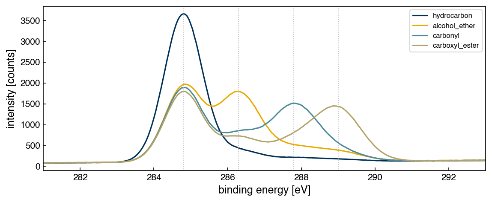

Problems: Clustering#
Get this problem set
Download everything (Topic5.3-Clustering_Problems.zip) — the notebook and
xps_carbon.csv, in a folder that is ready to run as-is.
The Download badge at the top of the page will also give you the notebook on its own. On Vocareum everything is already set up for you.
Before you start
This problem set accompanies Clustering. It is worth 100 points:
Part A — Skill Checks (30 pts) — short answers, auto-graded, resubmit as often as you like until they pass.
Part B — Visualization (35 pts) — plots plus written interpretation, peer graded.
Part C — Open Ended (35 pts) — one synthesis problem, peer graded.
The parts build on each other: Part A works out the syntax you need for Part B, and Part B produces the evidence you argue from in Part C. Do them in order.
Setup#
X-ray photoelectron spectroscopy measures the binding energy of core electrons, which shifts as the atom’s chemical environment changes. For carbon, the C 1s line moves to higher binding energy as the carbon becomes more oxidized:
component |
binding energy |
environment |
|---|---|---|
C–C / C–H |
284.8 eV |
hydrocarbon |
C–O |
286.3 eV |
alcohol, ether |
C=O |
287.8 eV |
carbonyl |
O–C=O |
289.0 eV |
carboxyl, ester |
data/xps_carbon.csv holds 400 simulated C 1s spectra, 100 from each of four
surface chemistries, sampled from 280 to 295 eV in 0.05 eV steps. Columns E_280.00
through E_295.00 are intensities; label (0–3) and chemistry record the true class.
One thing to know before you start: no real carbon surface is a single component. Every sample carries adventitious hydrocarbon contamination, and oxidized surfaces carry intermediate species too. Each spectrum here is therefore a mixture — a dominant component that defines its class, plus realistic amounts of the others. The classes overlap by construction, exactly as they would in a real experiment.
You have the true labels, which you would not have in practice. Use them only to score your clustering, never to build it.
%matplotlib inline
import numpy as np
import pandas as pd
import matplotlib.pyplot as plt
from sklearn.cluster import KMeans
from sklearn.decomposition import PCA
from sklearn.metrics import silhouette_score
try:
plt.style.use('../settings/plot_style.mplstyle') # available inside the book
except OSError:
pass # downloaded notebook: use defaults
df = pd.read_csv('data/xps_carbon.csv')
ecols = [c for c in df.columns if c.startswith('E_')]
energy = np.array([float(c[2:]) for c in ecols])
raw = df[ecols].values
y_true = df['label'].values
print(f"{raw.shape[0]} spectra x {raw.shape[1]} channels")
print(df['chemistry'].value_counts().to_string())
400 spectra x 301 channels
chemistry
hydrocarbon 100
carbonyl 100
alcohol_ether 100
carboxyl_ester 100
fig, ax = plt.subplots(figsize=(8, 3.5))
for k, name in enumerate(['hydrocarbon', 'alcohol_ether', 'carbonyl', 'carboxyl_ester']):
ax.plot(energy, raw[y_true == k].mean(axis=0), lw=1.5, label=name)
for e in (284.8, 286.3, 287.8, 289.0):
ax.axvline(e, color='0.7', ls=':', lw=0.8)
ax.set_xlim(281, 293)
ax.set_xlabel('binding energy [eV]'); ax.set_ylabel('intensity [counts]')
ax.legend(fontsize=8);

Run this once to load the autograder. It will not run inside the book — use the downloaded notebook.
import otter
grader = otter.Notebook()
Preprocessing — use exactly this#
Raw XPS intensities sit on an inelastic background and have an arbitrary overall scale, so spectra must be put on a common footing before any distance is computed. Use precisely this recipe, or your numbers will not match:
Background: for each spectrum, linearly interpolate between the mean of the first 20 channels and the mean of the last 20, and subtract it.
np.linspaceinterpolates between two arrays if you give it arrays.Normalize: divide each spectrum by its own total and multiply by 100, so every spectrum sums to 100 — each channel is then a percentage of that sample’s total signal.
# YOUR CODE HERE — produce `X`, the (400, 301) preprocessed array used throughout
X = ...
Part A — Skill Checks (30 pts)#
Three questions, 10 points each.
A clustering has no canonical labeling — renumbering every cluster changes nothing about the partition. So none of these ask which cluster a spectrum landed in. Each asks for a quantity that is unchanged when clusters are renumbered, which is the only kind of answer that can be checked automatically.
A1. Cluster and score it without labels (10 pts)#
Exercise 152
Run k-means on X with
KMeans(n_clusters=4, n_init=50, random_state=0)
and compute the silhouette score of the resulting partition with
sklearn.metrics.silhouette_score.
Silhouette needs no ground truth — it compares how tight each cluster is against how far it sits from its nearest neighbor, so it can be computed on data you have no labels for at all.
Assign the score to sil_k4.
# YOUR CODE HERE
sil_k4 = ...
grader.check("q1")
A2. Score it against the known chemistry (10 pts)#
Silhouette says how tidy the clusters are, not whether they are the right clusters. You have the true chemistry for every spectrum, so you can ask the second question too — using purity, from the chapter’s Accuracy and Distance Metrics section:
Each cluster is given the class most common inside it, and the score is the fraction of points that gets right. Read off a confusion matrix with true classes as rows and clusters as columns, it is the sum of the column maxima divided by \(N\) — which is what makes it independent of how the clusters happen to be numbered, and therefore checkable here.
Two anchors for reading it on this data. Four classes of 100 spectra each means a clustering carrying no information scores about \(1/J = 0.25\), and a perfect one scores 1.0.
Exercise 153
Compute the purity of your A1 clustering against y_true using
sklearn.metrics.confusion_matrix, and assign it to purity_k4.
# YOUR CODE HERE
purity_k4 = ...
grader.check("q2")
A3. How many dimensions does the data really have? (10 pts)#
Exercise 154
Fit PCA(random_state=0) to X and find the smallest number of principal components
whose cumulative explained variance ratio reaches 0.95.
Assign that integer to n_pc_95.
# YOUR CODE HERE
n_pc_95 = ...
grader.check("q3")
Part B — Visualization (35 pts)#
Exercise 155
Two panels.
Choosing k. For
k = 2 … 8, run the same k-means configuration and compute both the silhouette score and the purity againsty_true. Plot both againstkon one set of axes and mark thekthat maximizes silhouette.What the clusters are. Project
Xonto its first two principal components and draw two scatter plots side by side: the same points colored first by k-means cluster, then by truechemistry.
Then, in 3–5 sentences:
Silhouette picks a clear winner. Purity does not — look at what it does at
k = 7andk = 8compared withk = 4. Explain why purity behaves that way, and what would happen to it if you allowed one cluster per spectrum.Given that, which of the two metrics can be used to choose
k, and which can only be used to report on a choice already made?The PC1–PC2 scatter shows the same points twice. Say what the comparison tells you about why purity stalls near 0.72 rather than approaching 1.
Label all axes with units.
# YOUR CODE HERE
fig, axes = plt.subplots(1, 3, figsize=(15, 4))
Part C — Open Ended (35 pts)#
Exercise 156
k-means found the right number of clusters and still recovered the chemistry only partly. Work out why, and say what — if anything — would do better.
Your answer should include:
At least three clustering algorithms from this chapter besides k-means, each scored by purity against
y_trueat a comparable number of clusters. Gaussian mixtures, a density-based method, and hierarchical clustering viascipy.cluster.hierarchy.linkagewithfclusterare the obvious choices.An explanation of the A3 result: four chemical components, three principal components. What constraint links them, and what shape does that force the data into?
A short written argument (one paragraph) about whether any clustering algorithm should be expected to recover these four chemistries, citing your own numbers.
One of the methods will behave strangely — either labeling most of the dataset as noise, or returning far more clusters than there are chemistries. Do not tune that away and move on. Explain what its behavior tells you about the shape of the data, and be careful comparing its purity against the others if it produced a different number of clusters.
Note
Domain knowledge of spectroscopy may be helpful here, but it is not required — the question can be answered entirely from the scores, the projections and the cluster counts.
There is more than one defensible answer. You are graded on the reasoning and the evidence.
# YOUR CODE HERE
Summary#
Part A scored one clustering two ways: silhouette, which needs no labels, and purity, which uses them but only through a per-cluster majority vote. Both are unchanged by renumbering the clusters, which is what makes an unsupervised result checkable at all.
Part B showed the two metrics disagreeing on purpose. Silhouette peaks at the true number of chemistries; purity keeps climbing as clusters are split, so it can report on a choice but cannot make one.
Part C traced the stubborn gap between 0.72 and 1 back to the closure constraint on compositional data, and used a density-based method’s failure as positive evidence about the shape of the dataset.
Additional Reading#
NIST X-ray Photoelectron Spectroscopy Database, SRD 20 Version 5.0 — the source of the C 1s chemical shifts used to build this dataset.
scipy.cluster.hierarchy.fcluster— turning the linkage tree from the chapter into flat clusters.J. Aitchison, The Statistical Analysis of Compositional Data, J. R. Stat. Soc. B 44, 139–177 (1982) — the origin of the simplex view of closed data.